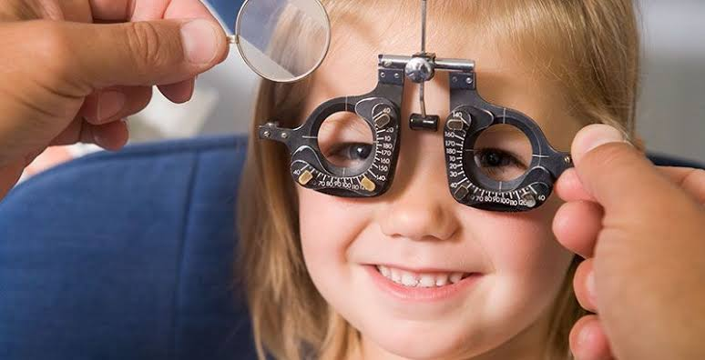

Revisión visual infantil

La revisión visual infantil permite evaluar el desarrollo de la visión en niñas y niños. Es importante porque algunos problemas visuales pueden pasar desapercibidos y afectar actividades cotidianas como leer, escribir y aprender.
Ayuda a detectar problemas visuales y facilita que los niños reciban la atención adecuada durante su desarrollo.